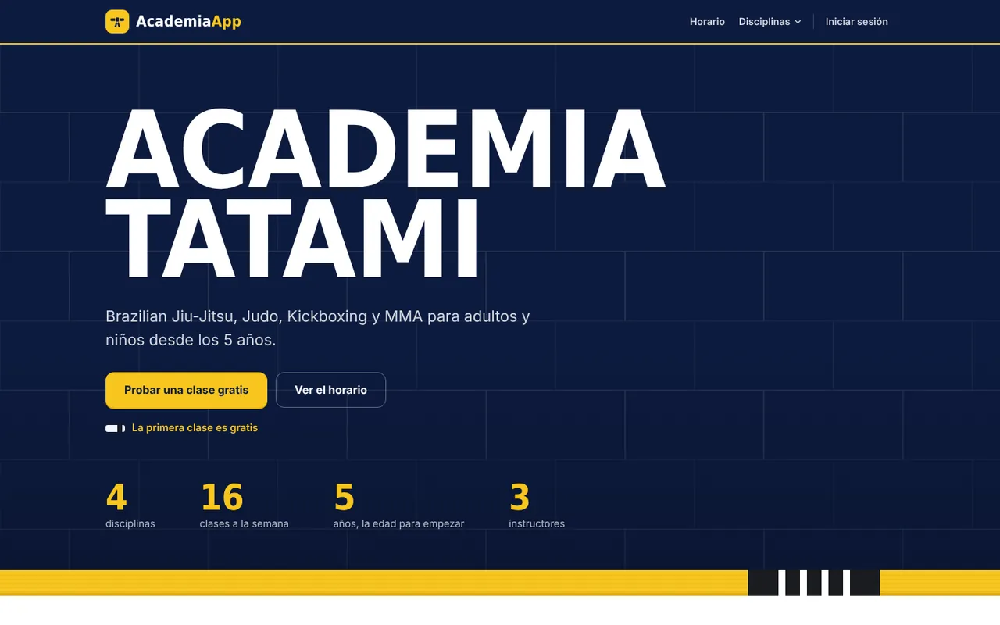
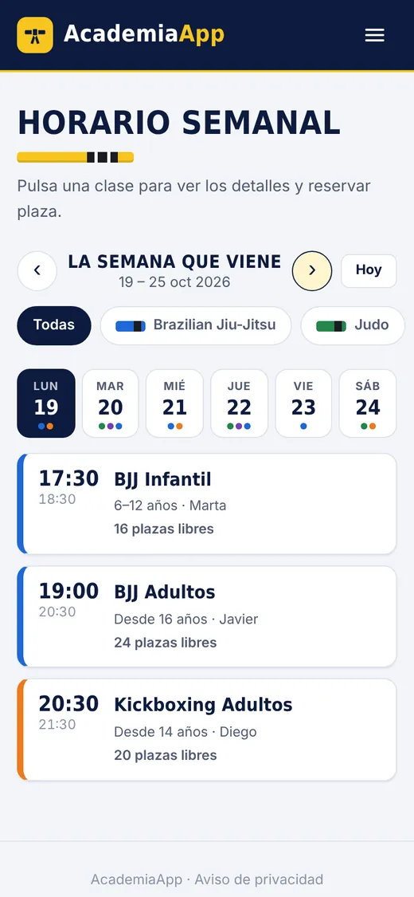

Aplicaciones web a medida, del servidor a la pantalla.
Soy Álvaro Fernández Ortuño, desarrollador web y técnico de sistemas en
Albacete. Diseño, programo y pongo en marcha aplicaciones completas: reservas, cuotas,
tiendas online, fichajes y paneles de gestión.
Cada fila pregunta a su servidor ahora mismo. Están en un plan gratuito:
si una llevaba un rato sin visitas, tarda hasta un minuto en arrancar.
Proyectos
Cuatro aplicaciones completas, cada una con su servidor, su base de datos y su
panel de administración. Dentro de cada demo tienes cuentas de prueba para entrar con un clic.
alvarofo-academia.onrender.com


AcademiaApp
Gestión para una academia de artes marciales
Pensada para sustituir el programa de pago de una academia real: familias,
horario, reservas, cuotas y pasar lista en una sola aplicación.
Una cuenta por familia: se reserva y se paga por los hijos con un solo acceso.
Horario con aforo, lista de espera automática y clase de prueba gratis.
Cuotas en recepción o con tarjeta (Stripe), con pausas y bajas.
Panel de la academia: horario, equipo, alumnos, avisos por email y copias de seguridad.
Aplicaciones que reservan, cobran y ordenan el día a día, no solo una web
que se vea bien. Empiezo por entender cómo trabajas y te propongo lo que de verdad te ahorra tiempo.
Reservas y clases
Para gimnasios, academias, estudios de yoga o centros deportivos. Horario con plazas,
lista de espera, cuotas y panel para el equipo.
Técnico de sistemas y desarrollador web: hago la aplicación y también
monto el servidor donde funciona.
Acabé el Grado Superior en Administración de Sistemas Informáticos en Red como primero de mi
promoción, con un 9 de media. En las prácticas, como técnico de sistemas en Grupo SIM, me
encargué del soporte a usuarios, de equipos y permisos en Windows, de la red interna y de
pruebas de ciberseguridad.
En paralelo me he especializado en desarrollo web. Las cuatro aplicaciones de este portfolio
son mías de principio a fin: base de datos, servidor, interfaz, pruebas y despliegue.
Antes coordiné un equipo de reparto y almacén en SEUR. De ahí vienen la organización y la
costumbre de resolver incidencias deprisa.
Vivo en Albacete y trabajo también en remoto.
perfil.json
{"nombre":"Álvaro Fernández Ortuño","ciudad":"Albacete","modalidad":["presencial","remoto"],"formacion":"Técnico Superior en ASIR, nota media 9","desarrollo":["Node.js","Express","SQLite","JavaScript","HTML","CSS"],"sistemas":["Windows Server","redes LAN/WAN","soporte a usuarios"],"idiomas":{"español":"nativo","inglés":"B2"},"disponible":true}
Perfil técnico
Desarrollador web full-stack con base en sistemas y redes. Todo el código
de los proyectos está publicado y documentado en GitHub.
Backend
Node.js, Express, APIs REST, autenticación con JWT y bcrypt, subida de archivos.
Bases de datos
SQL, SQLite, transacciones, migraciones, copias de seguridad.
Frontend
HTML, CSS y JavaScript sin frameworks, diseño adaptable al móvil y accesibilidad.
Integraciones
Pagos con Stripe, emails con Resend y Brevo, gráficas con Chart.js.
Calidad y seguridad
Pruebas automáticas, Content-Security-Policy, límite de intentos, permisos por rol.
Sistemas
Windows Server, redes LAN/WAN, soporte a usuarios, despliegue de aplicaciones.
Formación
2023–2025Grado Superior en ASIRCESUR Murcia · nota media 9, primero de la promoción
2025Web Development FundamentalsIBM SkillsBuild
2024Introducción a la CiberseguridadCisco Networking Academy
Experiencia
2025Técnico de sistemas (prácticas)Grupo SIM · soporte a usuarios, equipos y permisos en Windows, red interna
2019–2021Encargado de logística y operacionesSEUR · coordinación de un equipo de reparto y almacén
Otros empleos: producción y almacén (2021–2023) y tapicería (desde 2025).
Español nativo, inglés B2. Carné B y vehículo propio.